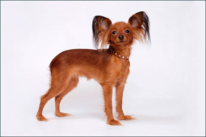
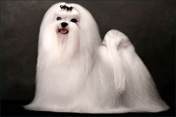

Померанский шпиц
Померанские шпицы очень живые и умные собачки. Из шпицев получаются прекрасные компаньоны.Они преданы своим владельцам, при этом совершенно не навязчивы.
Подробнее >
Русский той-терьер
Жизнерадостные тои находят общий язык с каждым членом семьи, легко поддаются дрессировке. Собачек этой породы пускают в общественный транспорт и гостиницы.
Подробнее > Мальтезе
Маленькие собачки мальтезе предназначены исключительно для человеческих рук, для уюта и тепла в доме, для эстетического удовольствия и для любви.
Подробнее > 